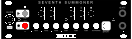

Slight Of Hand

V1.5.3 Updated: 08/10/2024
This is a firmware upload for the arduino-based module Slight Of Hand.
New Features:
- This patch optimizes EEPROM usage by detecting and converting the existing calibration data from float to integer. This opens up more space in the EEPROM for upcoming firmwares to use for data storage.
- This patch also officially releases the firmware as an open source starter template for those who wish to develop their own firmware for the Nocturne Alchemy Platform. Documentation and code available here: Slight Of Hand GitHub Repository
- This firmware can be installed on any module that is a part of the Nocturne Alchemy Platrorm. Firmware v1.5.3 User Manual (With Firmware Flashing Instructions)
- This patch also officially releases the firmware as an open source starter template for those who wish to develop their own firmware for the Nocturne Alchemy Platform.
- Firmware 1.5.3 User Manual (With Firmware Flashing Instructions)
Arp Of Darkness

V1.3.1 Updated: 09/09/2024
This is a firmware upload for the arduino-based Arp Of Darkness.
New Features:
- Golden Ratio Playback Mode - Introduces a unique, evolving sequence based on the Golden Ratio (φ) and creates patterns that are both structured and unpredictable
- Direct Playback Mode Selection (Immediate)- Directly change playback mode (Immediately) activated by long-pressing Octave Down + mode selection key
- Direct Playback Mode Selection (Queued) - Schedule mode changes for the next sequence cycle activated by long-pressing Octave Up + mode selection key
- Immediate reset: Instantly jump to the first note (Octave Down + High C)
- Queued reset: Reset on the next incoming gate (Octave Up + High C)
Bug Fixes & Enhancments
- Improved timing and responsiveness for all playback modes
- Enhanced stability and resource management
- Fixed bug that could pre-fill buffer on some devices
- Optimized long-press actions for more intuitive control
- Firmware 1.3.1 User Manual (With Firmware Flashing Instructions)
Seventh Summoner

V1.0.0 Updated: 12/29/2024
This is the first firmware upload for the arduino-based Seventh Summoner.
Features:
- Four octaves of control from C0 to C4
- Six 32-note sequences
- 16-step Summoner Sequence to chain and manipulate the six normal sequences
- Five playback modes (Forward, Backward, Pingpong, Golden Ratio and Random) with direct select, (queued & immediate) and reset
- EEPROM Storage for saving of all sequence data
- Clock input and CV out calibrated to 1V/0
- Calibration mode with tuning for each note across 4 octaves (Comes pre-calibrated)
Very special thanks to: https://github.com/dbuezas/arduino-web-uploader for making the updater code.